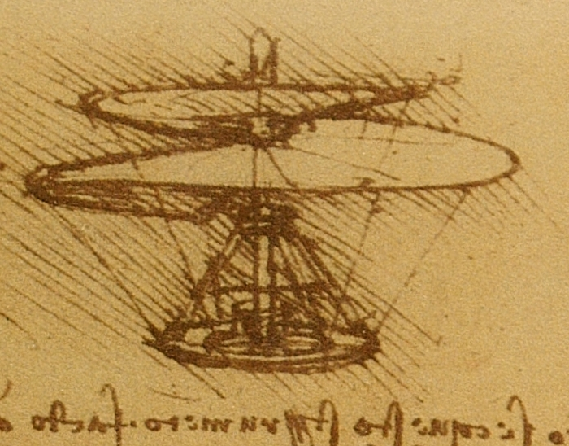
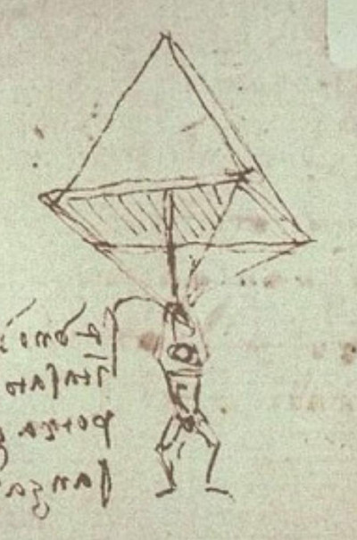
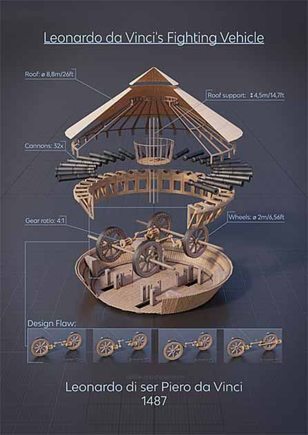

Proiectat în jurul anului 1489, acest aparat de zbor folosea o elice uriașă în spirală din pânză de in întinsă pe un cadru de lemn. Leonardo a considerat că, dacă elicea se rotește suficient de repede, se va „înșuruba” în aer și va ridica aparatul de la sol.

Concepută sub forma unei piramide din pânză de in susținută de bare ușoare din lemn, parașuta avea rolul de a încetini căderea unui om de la mare înălțime. Testele moderne realizate după schițele sale au dovedit că designul funcționează și asigură o aterizare sigură.

Această mașină de război era protejată de o carapace conică din lemn întărit cu plăci metalice și avea tunuri dispuse de jur împrejur. Vehiculul era pus în mișcare din interior de opt oameni care învârteau manivele conectate la roți.